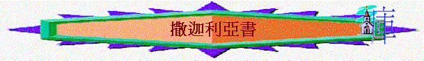

[ Home ] [ 經卷課程 ] [ 查經資料 ] [ 栽培課程 ] [ 事奉培訓 ] [ 聚會資源 ] [ 佈道資源 ] [ 胸懷普世 ] [ 異端異教 ] [ 信息分享 ] [ 專題研究 ] [ 祈禱專題 ] [ 詩歌簡譜 ] [ 動畫之廊 ] [ 輔導關懷 ] [ 站長聯絡 ]
用主日學直接教授形式, 講解撒迦利亞書
撒迦利亞書緒論 亞1 亞2-3 亞4 亞5-6 亞7 亞8 亞9-10 亞11 亞12-13 亞14
word 版